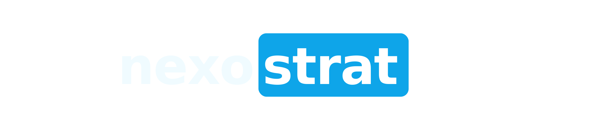

nexostrat.com
Cada semana
¿Cuántas horas pierde tu equipo?
1
hrs
en tareas repetitivas
En Nexostrat
Estudiamos
Identificamos
Implementamos
La meta
8–20
horas recuperadas / semana
tiempo para decidir, vender, crecer
Diferencia
Hecho a tu medida.
Sin plantillas · sobre cómo funciona tu negocio
Hablemos
+57 333 286 3969
30 minutos · sin costo